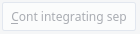
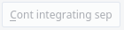
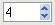
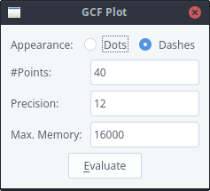

Polynomial Planar Phase Portraits
THE WINDOWS, STEP BY STEP
Comments useful for all windows:
Polynomial Planar Phase Portraits
THE WINDOWS, STEP BY STEP
Comments useful for all windows:
-
You will be working in a typical window of your Windows
program, so you will always have some buttons or menus to move, maximize,
minimize, modify size, and close your window.
-
Depending on your version of Windows you may see some
differences from the windows you may see here, but the correspondences
should be easy to do.
-
A button is a picture like
 and
it is a link to another window or the execution of a concrete sequence
of instructions. Sometimes you will see a button like ,
this is an unactive button. By some reason you cannot activate it at that
moment. You may also find buttons like
and
it is a link to another window or the execution of a concrete sequence
of instructions. Sometimes you will see a button like ,
this is an unactive button. By some reason you cannot activate it at that
moment. You may also find buttons like  .
These buttons include menus. If you press you will see the menu, and you
will be able to chose the option you wish with your left button.
.
These buttons include menus. If you press you will see the menu, and you
will be able to chose the option you wish with your left button.
-
An input like
 is some place where you must type a name or a number.
is some place where you must type a name or a number.
-
A set of buttons like is an Option Set. One of the options will
be selected by default. If you press in another option, the previous one will become
unselected.
-
An input like  is an integer input. You can either enter the integer
you wish from the keyboard or you can use the small buttons
to increase or decrease the current value.
- The P4 window:

- The Unfolded P4 window:

- The Parameters (sub)window:

- The Vector Field (sub)window:

- The Plot window:

- The Parameters of Integration window:

- The Legend window:

- The Orbits window:

- The Plot Separatrices window:

- The Plot-View window:

- The Print window:

- The GCF window:

- The Limit Cycles window:

- The Output window:

- The Main Program Settings window:

 Back to the main page
Back to the main page